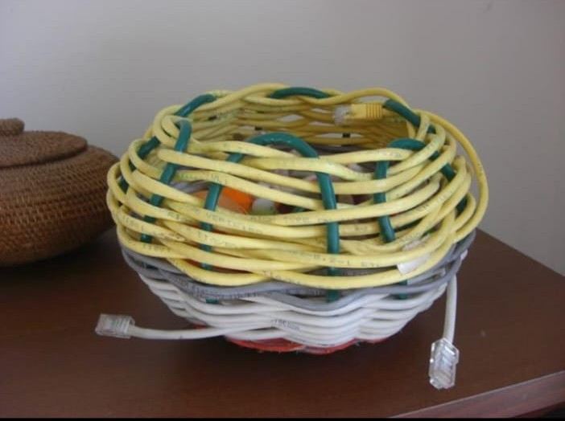

KOLEKSI PRODUK / 03
Keranjang Serbaguna dari Kabel LAN Bekas

Ulasan Produk
Keranjang serbaguna dari kabel LAN bekas merupakan produk daur ulang yang memanfaatkan limbah kabel jaringan komputer menjadi barang baru yang bermanfaat. Kabel LAN dianyam pada rangka keranjang sehingga menghasilkan produk yang unik, kuat, dan menarik.
Produk ini dapat digunakan sebagai tempat pensil, tempat alat tulis, penyimpanan kabel kecil, atau tempat aksesori di meja belajar. Pembuatan produk ini mendukung prinsip 3R, terutama Reuse dan Recycle.
Alat dan Bahan
- Kabel LAN bekas sekitar 5–10 meter.
- Kardus tebal atau rangka keranjang bekas.
- Kawat atau pengikat.
- Isi lem tembak.
- Kain atau kertas bekas untuk pelapis bagian dalam (opsional).
- Gunting atau tang pemotong.
- Penggaris.
- Tang lancip.
- Lem tembak.
- Cutter (jika diperlukan).
Langkah Kerja
- Siapkan kabel LAN bekas yang masih cukup lentur, lalu bersihkan.
- Siapkan kardus tebal sebagai alas dan rangka keranjang.
- Susun penyangga rangka dengan jarak yang teratur.
- Anyam kabel LAN secara bergantian pada rangka hingga sisi keranjang tertutup.
- Rapikan ujung kabel dan pastikan tidak ada bagian tajam yang menonjol.
- Periksa kekuatan anyaman dan kestabilan alas keranjang.
- Tambahkan pelapis bagian dalam jika diperlukan.
Catatan: Gunakan alat pemotong dengan hati-hati dan mintalah bantuan guru atau orang dewasa saat menggunakan alat yang tajam.
Estimasi Biaya
A. Biaya Alat
Alat : Rp 0
B. Biaya Bahan
| Nama Bahan | Harga |
|---|---|
| Kabel LAN bekas | Rp 0 |
| Kardus tebal bekas | Rp 0 |
| Isi lem tembak | Rp 5.000 |
| Kawat atau pengikat | Rp 3.000 |
| Pelapis bagian dalam | Rp 3.000 |
| Total | Rp 11.000 |
C. Harga Jual
Harga jual keranjang serbaguna dari kabel LAN diperkirakan sebesar Rp 25.000 per unit.
D. Laba
Laba bersih per unit = Harga Jual - HPP
Rp 25.000 - Rp 11.000 = Rp 14.000 per unit.
Produk Kreatif dari Barang Bekas
Barang bekas tidak selalu menjadi sampah. Dengan kreativitas, barang yang sudah tidak digunakan dapat diolah menjadi sesuatu yang memiliki manfaat dan nilai jual.
Kembali ke Produk